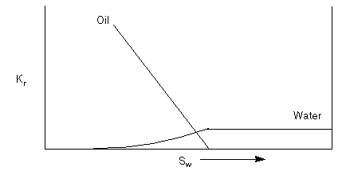

When water sweeps through a cell containing oil, a residual oil saturation as defined in the SATNUM saturation table will remain immobile in the cell. In some cases this ‘residual’ oil may in fact be slightly mobile, and over a period of time some of this oil will flow, reducing the oil saturation to a new residual value. This situation can be modeled in a very simple manner using the residual flow option.
You specify a second set of saturation tables, using the RESIDNUM keyword in the REGIONS section. An extra component of relative permeability is then added to the flows, which is calculated by looking up the relative permeability on the RESIDNUM tables using the prevailing cell saturation.
| [Eq. 123.1] |
where
| is the total relative permeability | |
| is the VE relative permeability calculated from the contact depth | |
| is the relative permeability from the RESIDNUM table | |
| is the oil saturation. |
The RESIDNUM tables will typically have very small oil values, with zero values for phases with no residual flow.
For example, consider a system with the following relative permeability behavior:
This relative permeability curve could be partitioned into a curve for VE (specified using SATNUM) and a curve for the residual flow specified using RESIDNUM.
